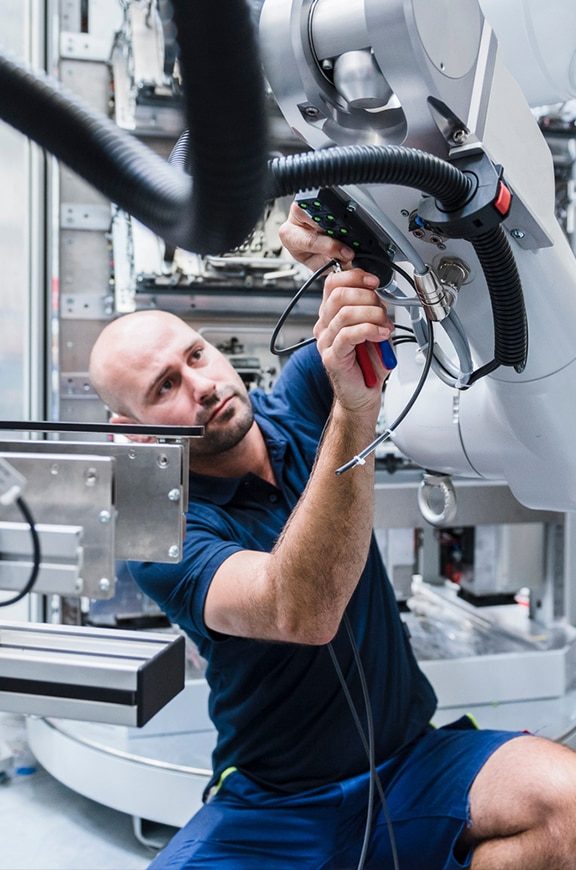
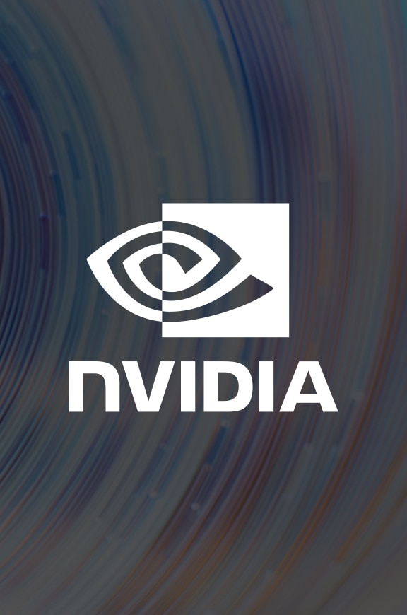
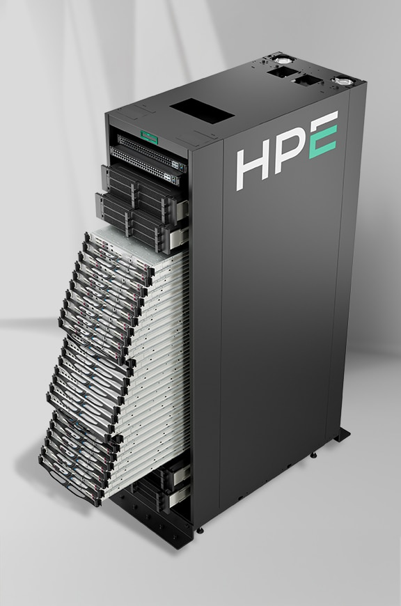
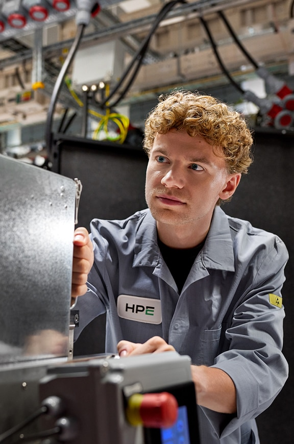
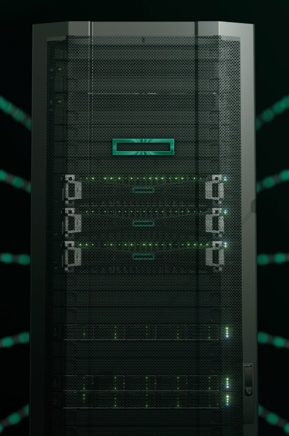
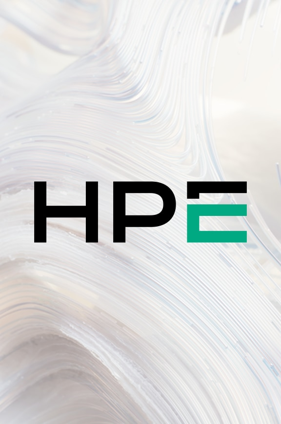
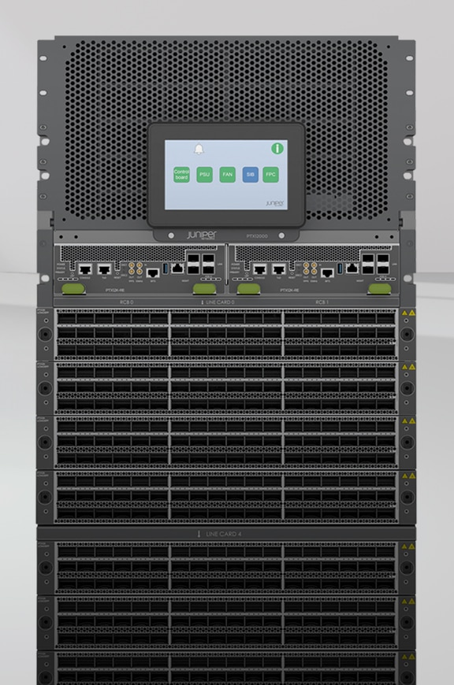
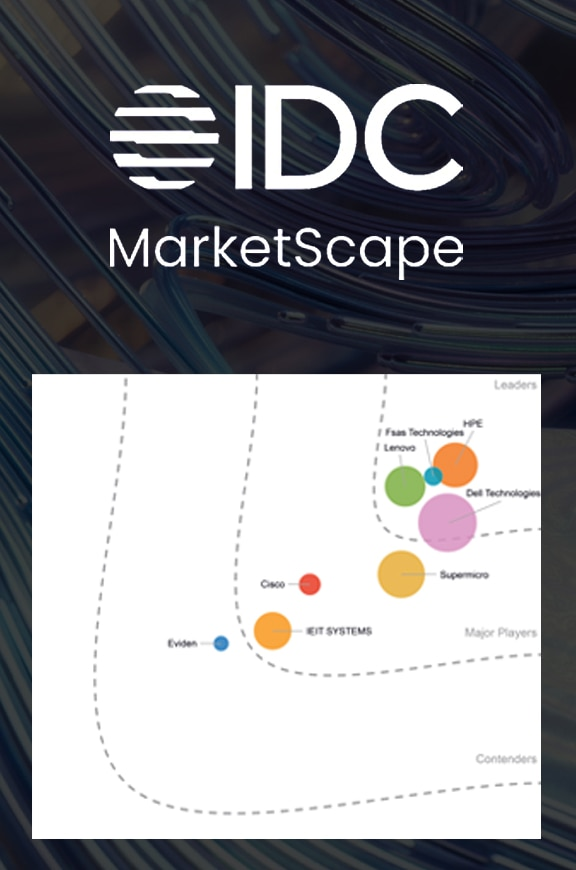

Latest news

HPE transforms distributed AI factories into intelligent AI grid powered by NVIDIA

HPE accelerates secure, scalable production-ready AI through new innovations with NVIDIA

HPE unveils next-generation AI factory and supercomputing advancements with NVIDIA

HPE drives sovereign AI leadership with advanced systems at national research centers: HLRS and Argonne National Laboratory

HPE Alletra Storage MP X10000 becomes first NVIDIA-Certified Storage object-based platform for enterprise AI
HPE Threat Labs report
New HPE Threat Labs research finds organized cybercrime scaling enterprise-style attacks on critical sectors.

HPE reports fiscal 2026 first quarter results
Strong Networking and increased Cloud & AI profitability in Q1 drive higher FY26 outlook

HPE accelerates service provider modernization at MWC
Integrated telco portfolio helps HPE customers capitalize on high growth AI opportunities

IDC MarketScape: Worldwide SAP HANA-Certified Server Appliances 2026 Vendor Assessment
HPE is a Leader in the IDC MarketScape: Worldwide SAP HANA-Certified Server Appliances 2026 Vendor Assessment
Only 5% of enterprises are fully ready for a virtualization reset
HPE research shows more than two thirds of enterprises plan to virtualize for AI readiness, highlighting a significant gap in execution.